Component & information-design rebuild. Before (R4 state) → After (R5, live AAPL) → Reference (taste authority).
Warm-graphite palette + single amber accent unchanged. Each "after" is a real-app Quartz capture at 2560×1664. The binary craft checklist is the gate (docs/redesign/R5_CRAFT_CHECKLIST.md).
PASS — Bloomberg-grade statement on the shared DataTable.
Was a 3-column key-value dump (left-aligned, flat tier, missing-unit bugs like "Free cash flow 101.098"). Now: a grouped FUNDAMENTALS table (Valuation / Profitability / …) with a right-aligned VALUE column, plus real period-column statements (Income / Balance / Cash flow across five fiscal years), every figure unit+sign formatted ($4.51T, $101.09B), three text tiers, graceful "—", and zero snake_case (raw provider keys humanized).
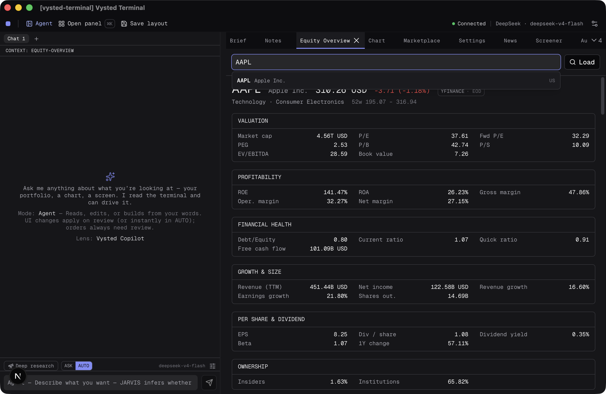
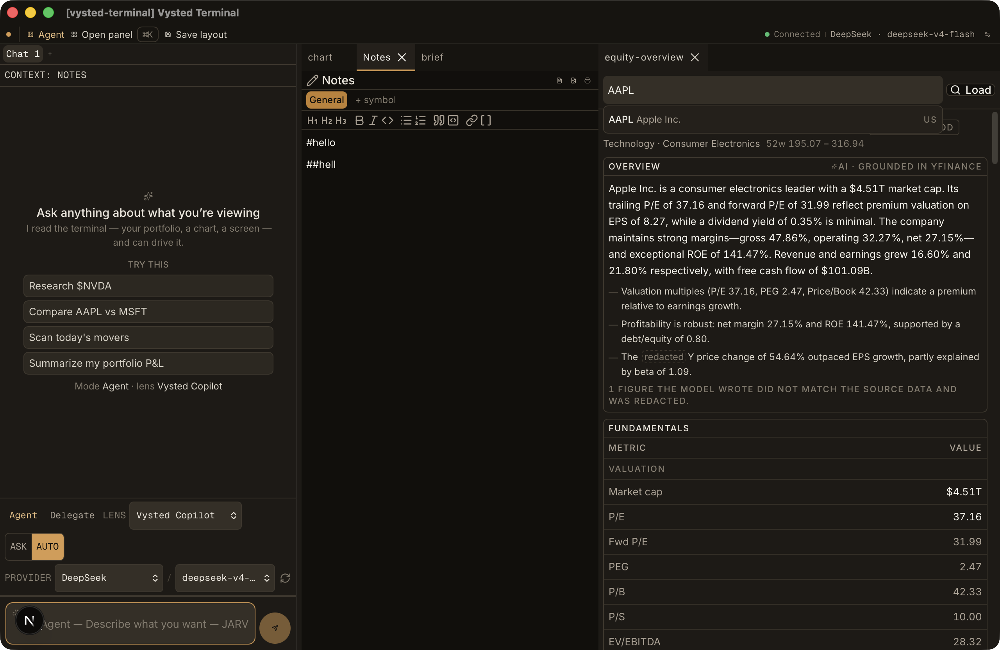
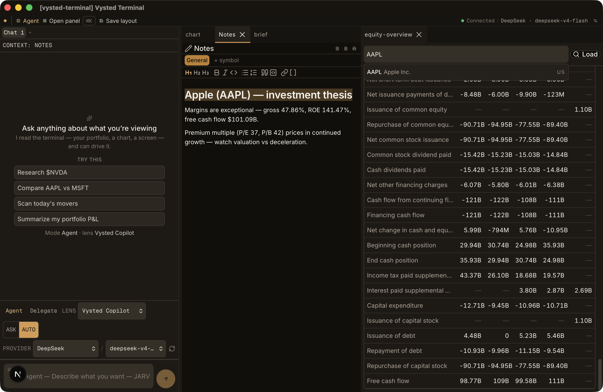
PASS — visible formatting toolbar + live markdown.
Was a bare textarea with three export icons and hidden "/" shortcuts. Now a real editor toolbar — H1/H2/H3 · bold/italic/code · bullet/numbered lists · blockquote/code-block · link · [[wikilink]] — with live markdown rendering locked to the system type scale (.notes-prose). Export, atomic persistence, wikilinks and slash commands preserved (20/20 tests).
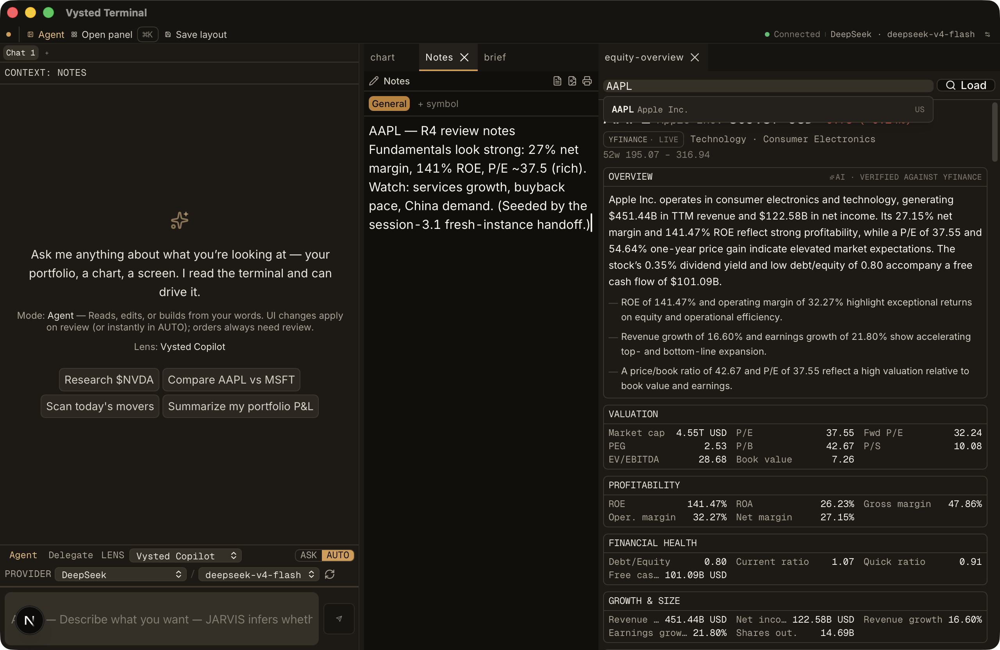
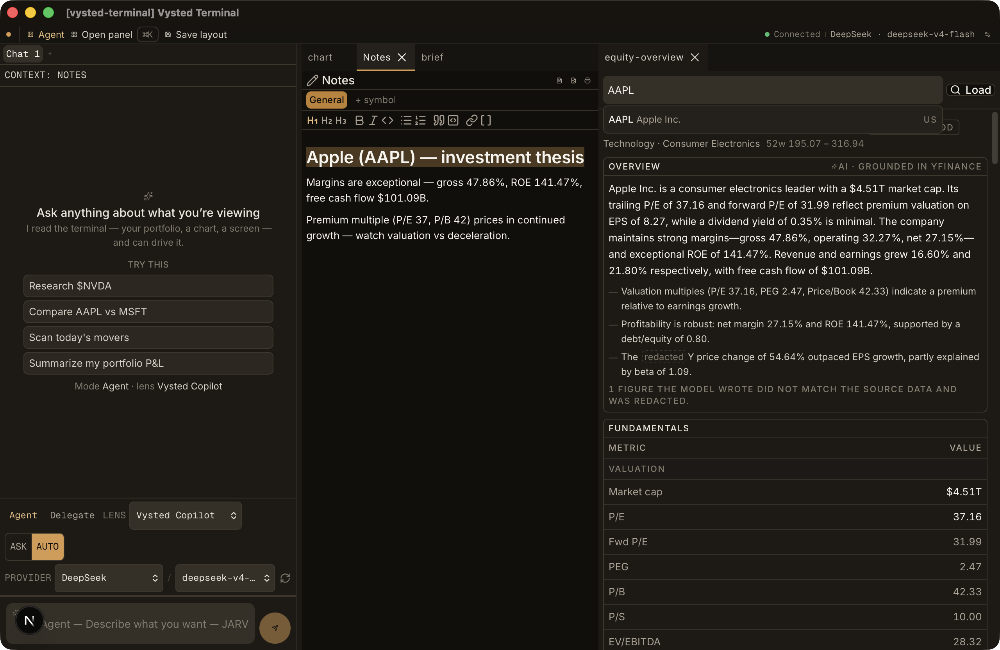
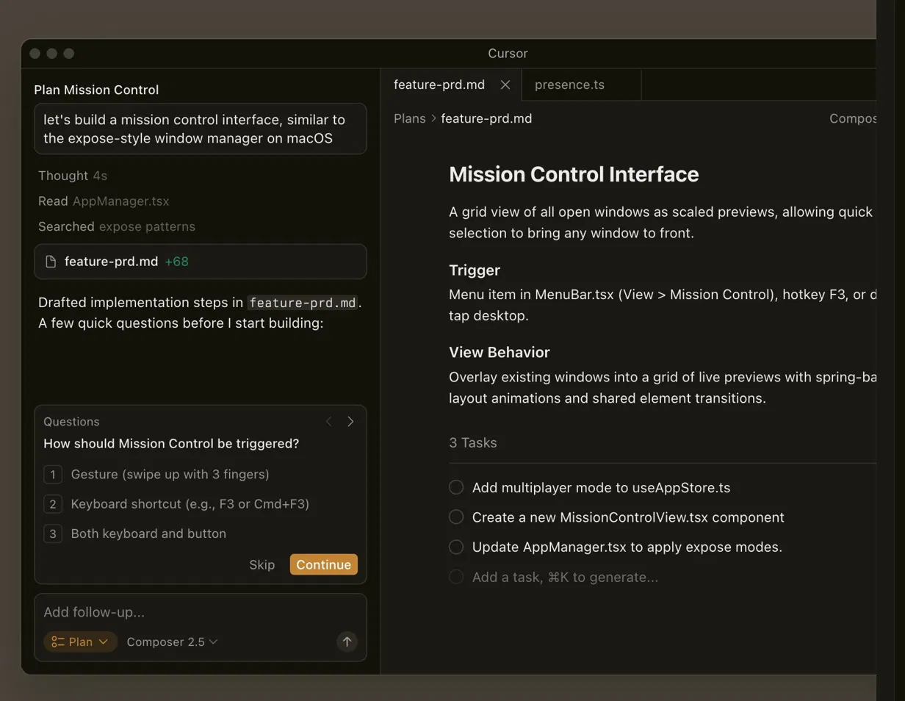
PASS — grouped, truncating, useful empty state.
Group headers were invisible (the className referenced an undefined utility — the "wall of agents"). Now headers render (Suggested / Agents / Actions / Panels); the empty-query state leads with curated Suggested actions (Open Notes / New Research Space / Open Chart / Search a Ticker), not an agent dump; row descriptions truncate with an ellipsis inside the row ("held fore…"), never hard-clipping; the input is sans (not mono). The fixed-query filter ("notes" → Notes) is preserved.
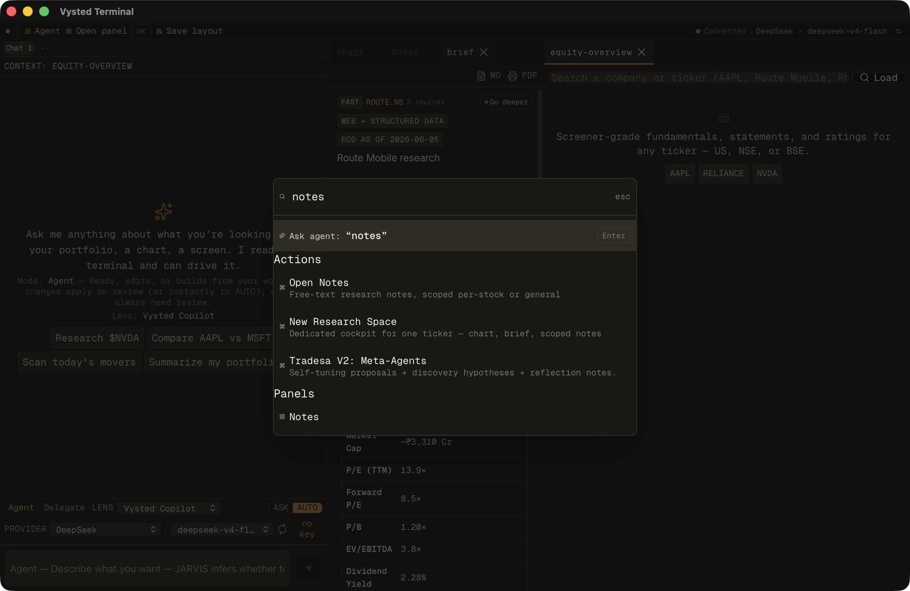
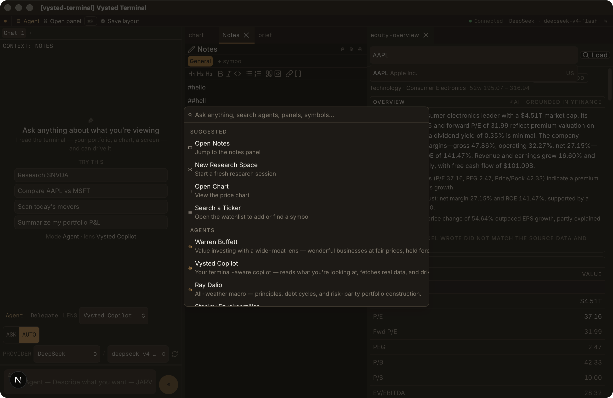
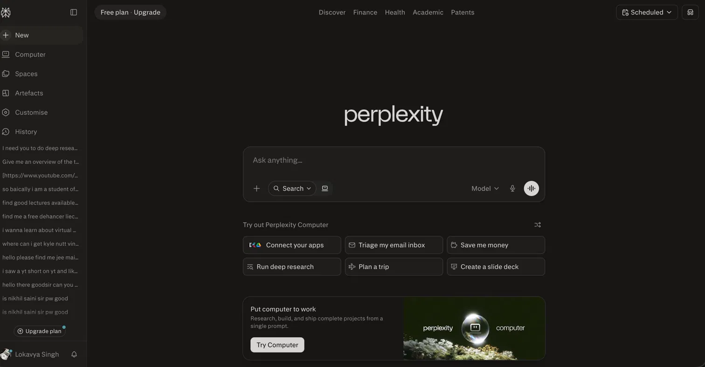
PASS — balanced pair; no avatar/placeholder overlap.
Was an oversized empty rectangle with a small-feeling send and an indicator colliding with the placeholder. Now the input (min-h 52px, rounded-lg, pl-11 glyph gutter) and the circular amber send (size-10) read as one deliberate pair; the mode glyph lives in the reserved left gutter, outside the text flow, so it never overlaps the placeholder. (The corner "N" in dev builds is the Next.js dev overlay, not app code.)
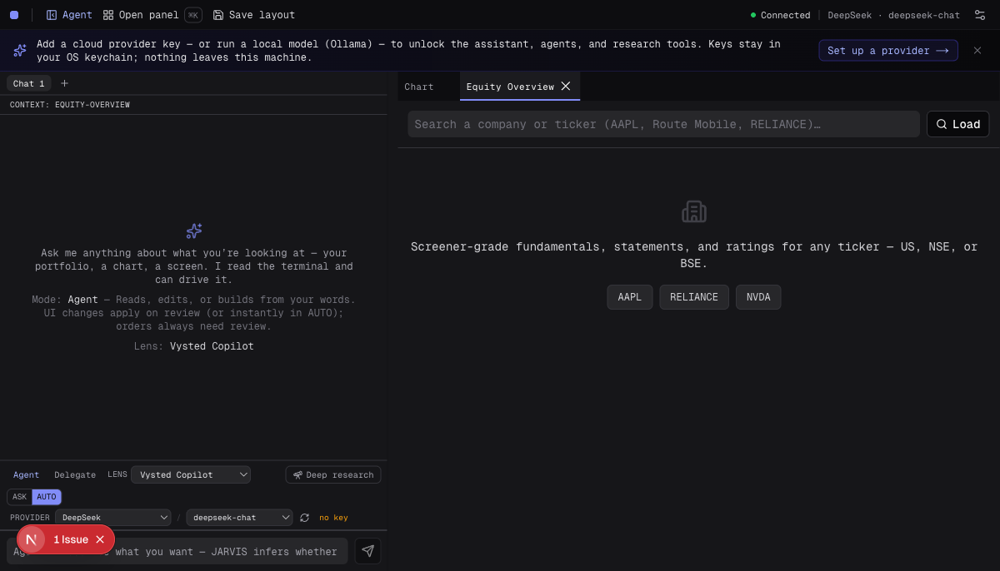
PASS — hero empty state fills the column; dock right-sized.
Was a small blurb floating mid-column with ~50% dead space, in an oversized 380px dock. Now the empty state fills the column (centered identity → "TRY THIS" → distributed suggestion chips), the dock is 310px (Cursor-parity), and the chart fraction lifts to 0.60 so chart + equity-overview get room.
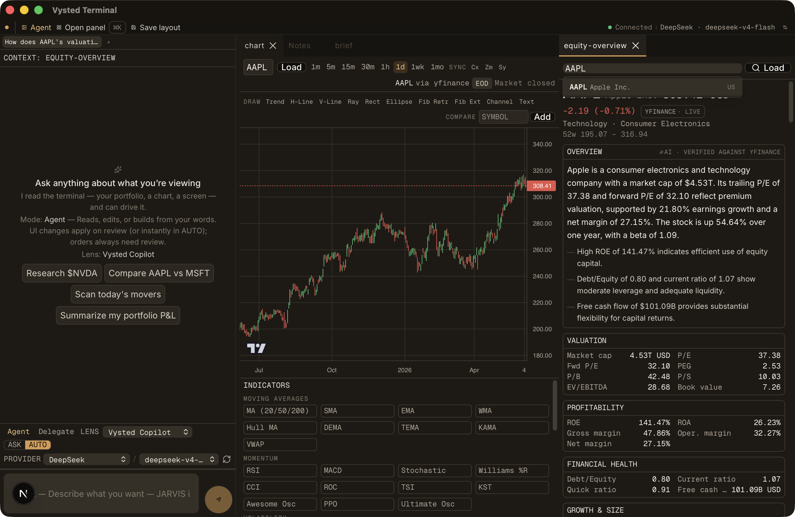
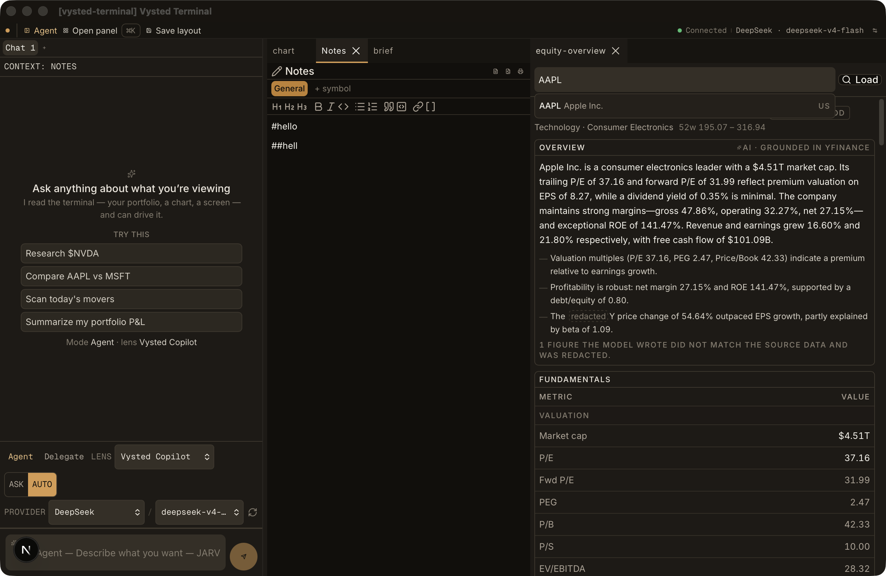
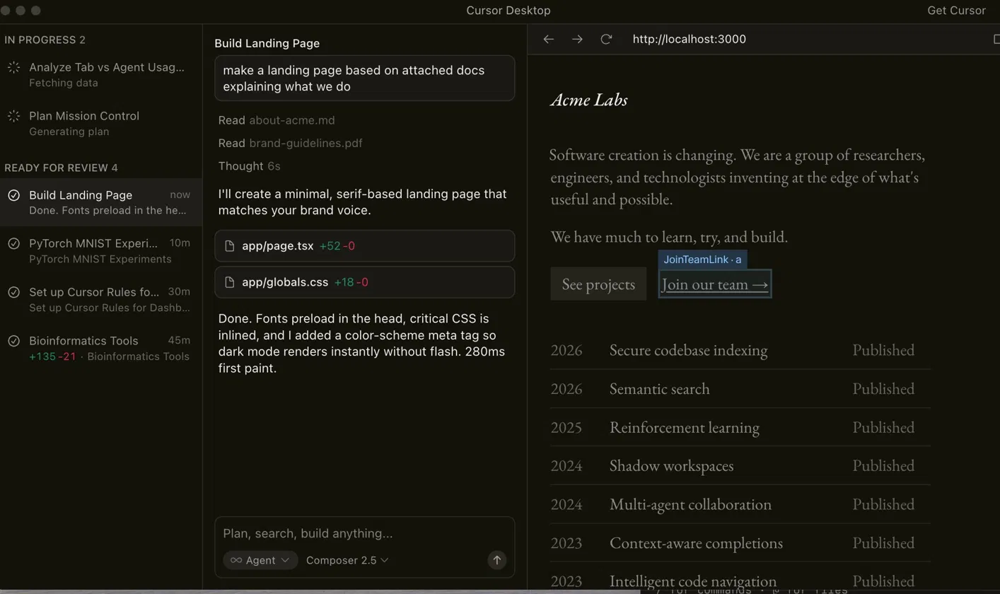
PASS — enforced via the scale-aware cn + off-scale sweep.
Root cause found in verification: the shared cn() used an unconfigured tailwind-merge that mis-classified the custom font-size utilities as colours and silently dropped the size across ~90 files. Fixed (extendTailwindMerge registers the seven font sizes). Plus an off-scale sweep removed 56+ arbitrary text-[…] and off-grid spacing across the changed surfaces. Proof: grep shows zero text-[…] / rounded-[…] / off-grid in every changed file. (Code-grep gate, no single screenshot.)
NEEDS-MANUAL-CHECK — fix shipped, operator one-time cert required.
Root cause: tauri dev never signs → unstable signature each rebuild → keychain ACL invalidates → re-prompt. Fix (outside Tier-1 tauri.conf.json): pnpm tauri:dev re-signs the debug binary with a stable self-signed identity on each hot-reload; scripts/macos-dev-setup.sh sets the partition list. The operator must run the one-time cert creation (docs/redesign/KEYCHAIN_DEV_SIGNING.md) and click "Always Allow" once, then confirm no re-prompt across a rebuild.